Starter · An Ode to Curiosity
Salmon Mosaic
With cucumber gazpacho & salad
A mosaic is a symbol of broken pieces reassembled into a beautiful composition. The salmon is complemented by a cucumber gazpacho and salad, all served cold, giving the meal a fresh start.
- Serves2
- Components7
- Key techniqueSous vide 43°C
- Cost / portion฿306
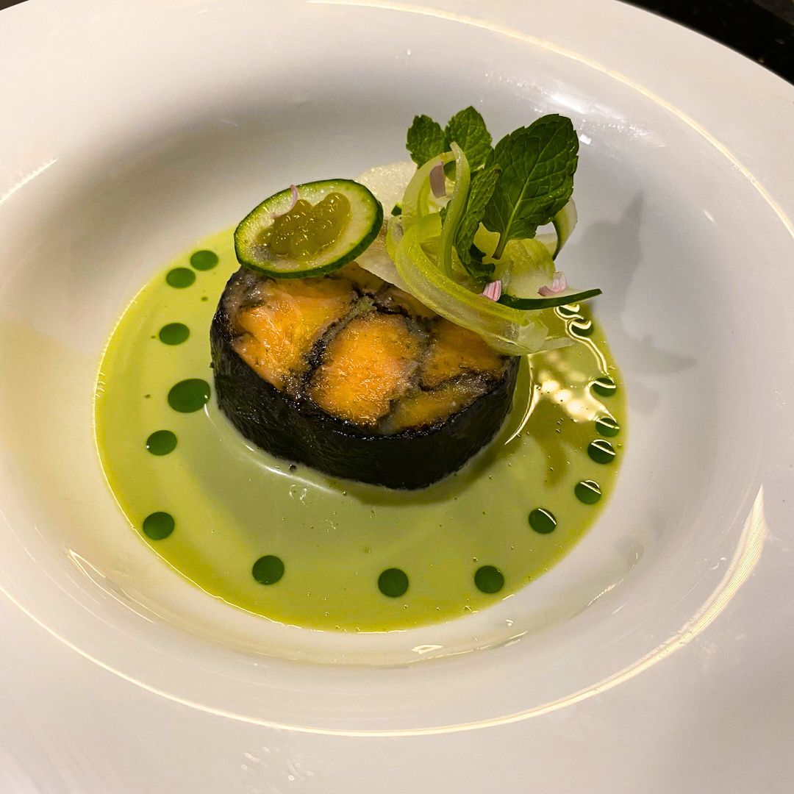
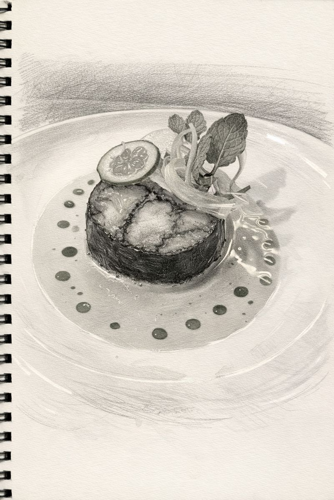
Salmon Mosaic
Part IIngredients
- 300 gsalmon
- 30 gnori sheets
- 1 lwater
- 40 gsalt
Method
- Remove skin and bones from the salmon.
- Cut the salmon into long strips.
- Boil the water and salt, then chill. Brine the salmon for 15 minutes.
- Bake half of the nori sheets at 150°C for 3 minutes, then grind into powder.
- Season the pat-dried salmon strips with nori powder.
- Wrap the salmon tightly in the remaining nori sheets into a tube shape with cling film.
- Vacuum seal and cook sous vide at 43°C for at least 30 minutes.
- Chill in an ice bath before serving (served cold).
- Cut to the desired thickness and serve.
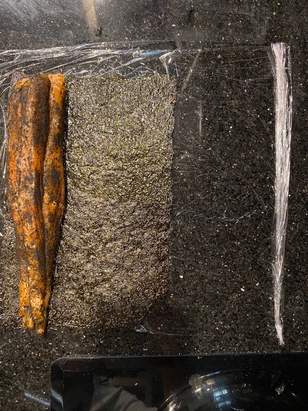
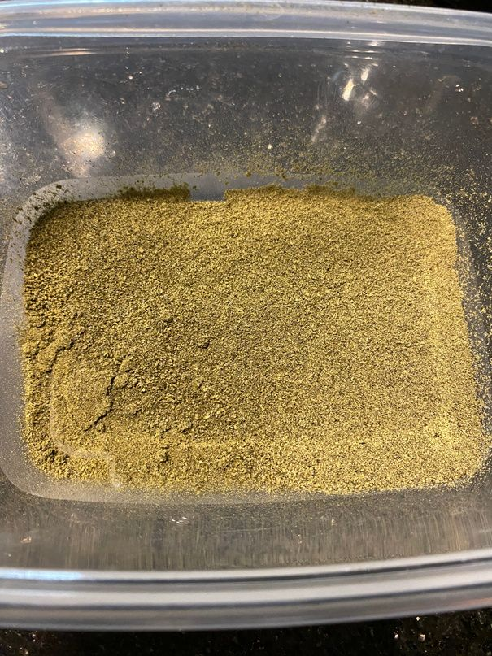
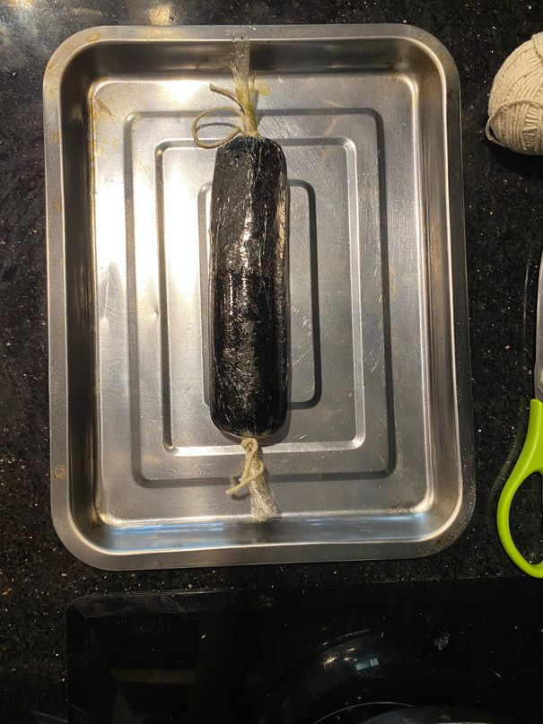
Cucumber Gazpacho
Part IIIngredients
- 2cucumbers
- 50 gcelery
- 200 gGreek yoghurt
- 30 gwhite wine vinegar
- 5 gparsley
- 5 gmint
- 5 gcoriander
- 5 gchives
- 10 ggarlic
- 1lemon, juiced
- 150 gcashews
Method
- Roughly chop all the vegetables.
- Blend the cucumber, celery, garlic, herbs and cashews until smooth.
- Add the yoghurt, vinegar and lemon juice, then season.
- Pass through muslin.
- Chill.
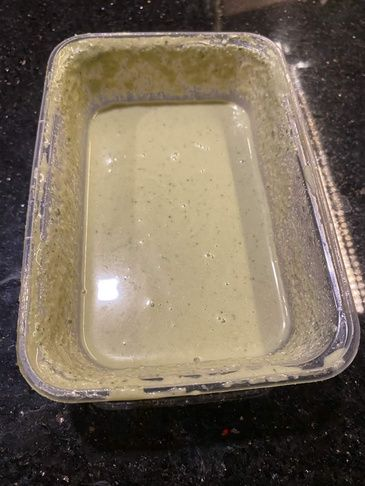
Salad Garnish
Part IIIIngredients
- 1cucumber
- 20 gcelery
- 20 gdaikon
Method
- Shave the celery, daikon and cucumber into thin slices on a mandoline.
- Cut into the desired shapes for garnishing.
- Place in iced water to make them curl.
- Drain and toss with dressing before plating.
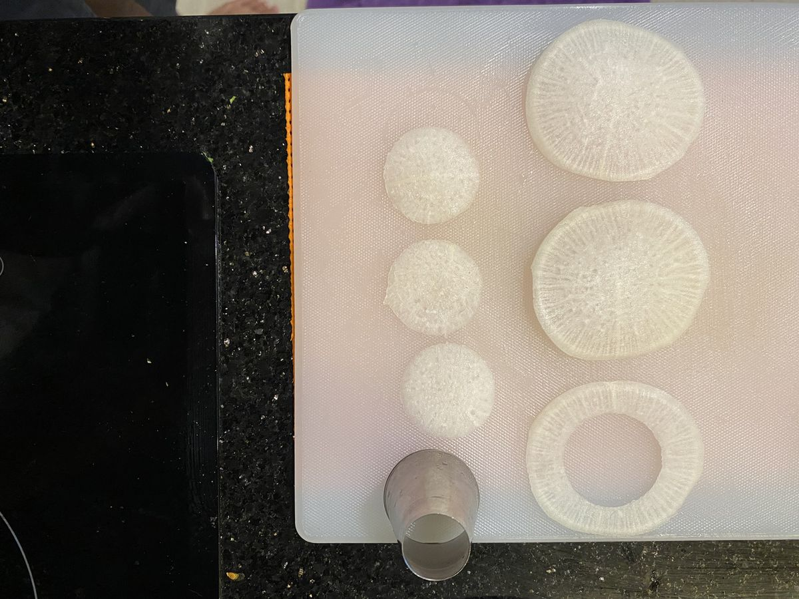
Cucumber Caviar
Part IVIngredients
- 2cucumbers
- 1 gagar
- 15 glemon juice
Method
- Roughly chop the cucumber, then strain the pulp and collect the juice.
- Chill oil until cold but not frozen (it needs to stay liquid).
- Cook the cucumber juice, season with salt and lemon juice, then add the agar. Bring to the boil and whisk until it all dissolves.
- Let the temperature drop a little, then drip the mixture into the cold oil from the edge of a spoon, little by little.
- Strain the oil, then keep the caviar in cold water.
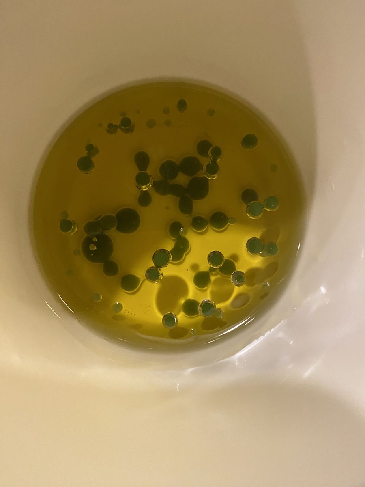
Dressing
Part VIngredients
- 25 gwhite wine vinegar
- 75 goil
Method
- Whisk the vinegar and oil to emulsify.
- Season lightly.
Parsley Oil
Part VIIngredients
- 25 gparsley
- 70 golive oil
Method
- Blanch and refresh the parsley.
- Blend with the oil until smooth.
- Strain through muslin.
- Reserve for finishing.
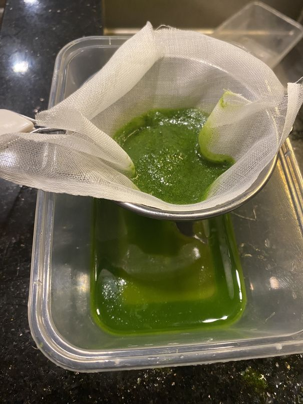
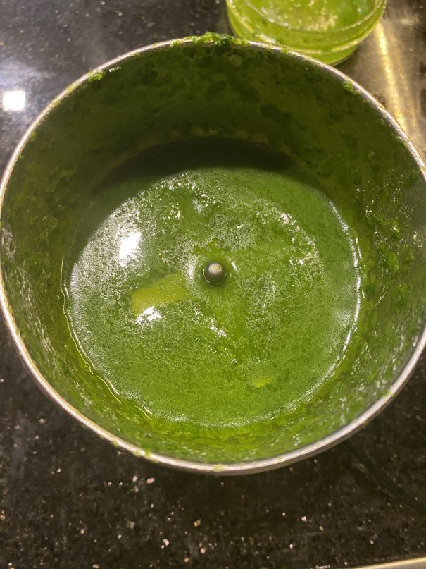
Finishing & Assembly
Part VIIIngredients
- mint leaves
- 10 gclarified butter
- edible flowers
Assembly
Portion the salmon mosaic and brush with clarified butter. Garnish with daikon discs, cucumber discs, cucumber caviar, cucumber and celery ribbons, mint and flowers. Finish with the gazpacho and parsley oil.
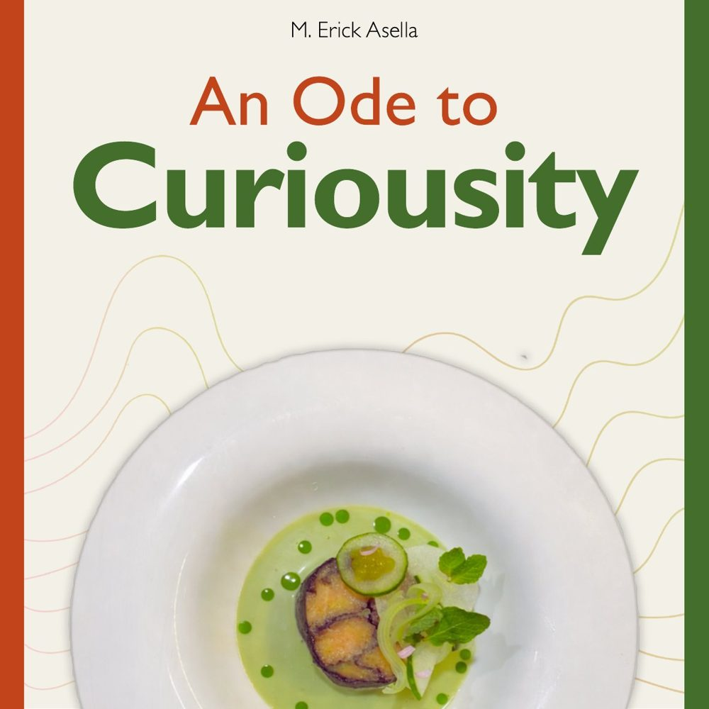
The full book
Download the PDF
Both recipes as designed, with every step photo, illustration and the full costing. 24 pages, about 9 MB.
Download PDF